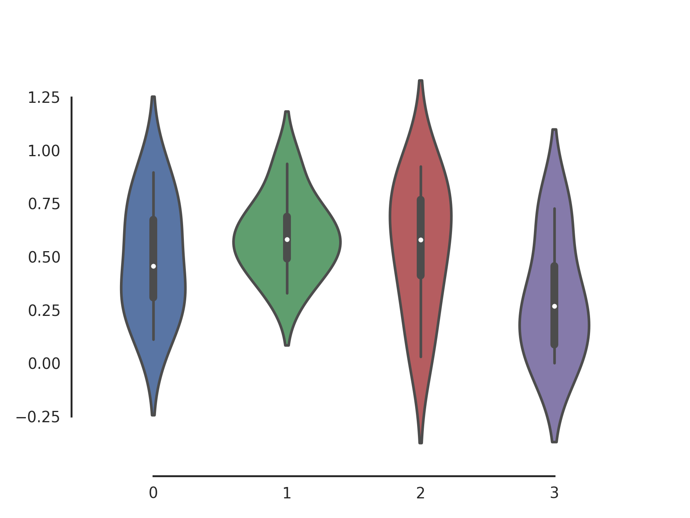
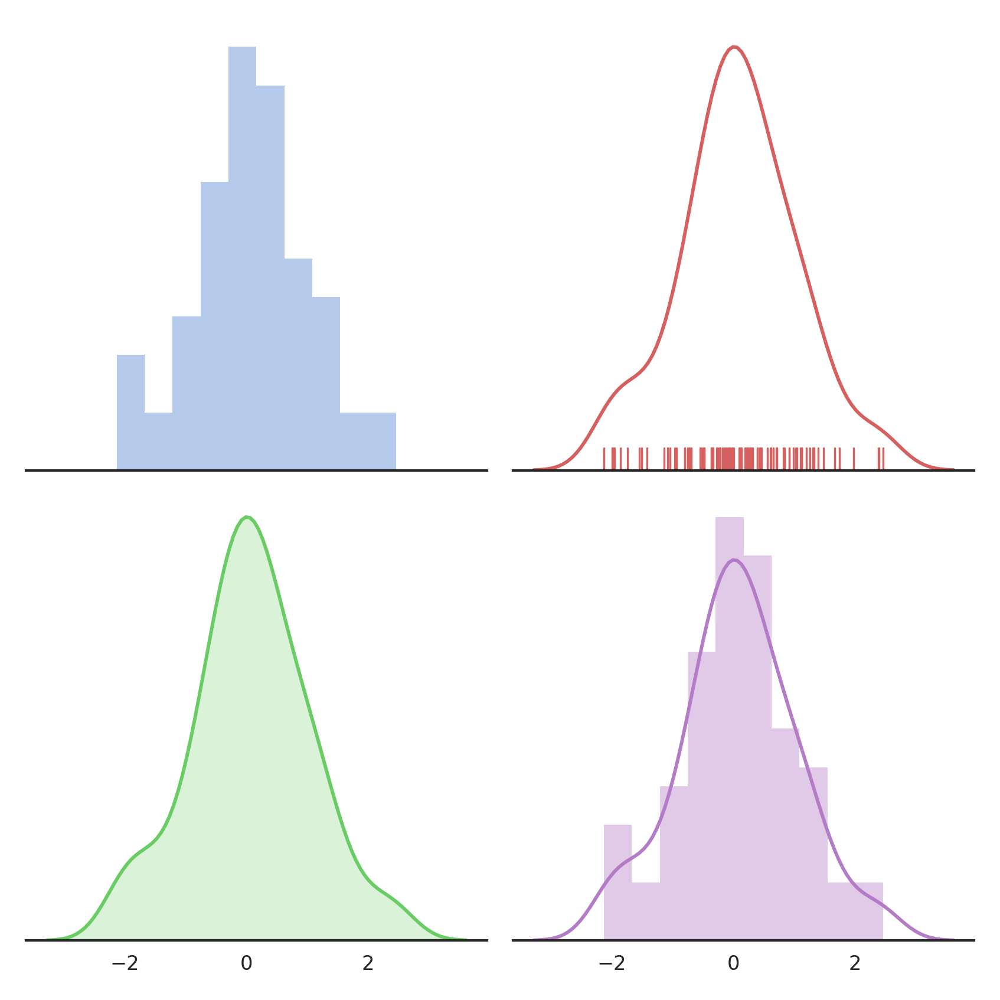

tqdm, imageio and Seaborn: Three essential python modules.
→ tqdm: Progress bars for the command line or Jupyter notebook
→ Install tqdm
→ imageio: Load and save images
→ Install imageio
→ Seaborn: Create beautiful graphs and visualizations
→ Install seaborn
→ Install tqdm
→ imageio: Load and save images
→ Install imageio
→ Seaborn: Create beautiful graphs and visualizations
→ Install seaborn
Learn how to use
tqdm to display command line and Jupyter progress bars, imageio to easily load and save images and Seaborn to create beautiful graphs and visualizations. tqdm: Progress bars for the command line or Jupyter notebook
Import the
tqdm function from the module. Then wrap it around any iterable used in a for loop to create a progress bar.from tqdm import tqdm
for i in tqdm([a, b, c, d, ..]):
...
41%|███████████████ | 4080/10000 [00:04<00:06, 895.98it/s]
len() (like a list or a numpy array but unlike a generator) it will also display the progress percentage and estimated time left. You can also use tqdm in Jupyter notebook by importing the tqdm_notebook function.tqdm also has some more advanced functionality for nested loops, labeled loops and color-coding exit status, all of which you can see in their great documentation. Install tqdm
Install tqdm with pip (pip3 for Python 3) or conda:
pip install tqdm
pip3 install tqdm
conda install tqdm
imageio: Load and save images
Import
imageio, then use .imread(uri,..) and .imwrite(uri, image,..) to read and write images.import imageio
image = imageio.imread('./cat.png')
# You can manipulate the image as a numpy array.
image = image[:500]
image.imwrite('./half_cat.png', image)

imageio can also read volumetric and medical data, read frames from a video file, or open an url. It supports a ton of different file formats and parameters and also has a great documentation. Install imageio
Install imageio with pip (pip3 for Python 3) or conda:
pip install imageio
pip3 install imageio
conda install imageio
Seaborn: Create beautiful graphs and visualizations
Seaborn is basically an extension to matplotlib that allows you to use its normal plotting functions but applies really pretty styles to them. It also provides some additional functions not available in matplotlib. Check out their example library and getting started guide.Here is the jupyter notebook for the following examples.


Install seaborn
Install seaborn with pip (pip3 for Python 3) or conda:
pip install seaborn
pip3 install seaborn
conda install seaborn
Any questions? Suggestions? Clarification needed?
Telegram: @schmidtdominik
Email: schmidtdominik30 [at] gmail. [dot] com
Reddit: u/dominik_schmidt
Telegram: @schmidtdominik
Email: schmidtdominik30 [at] gmail. [dot] com
Reddit: u/dominik_schmidt